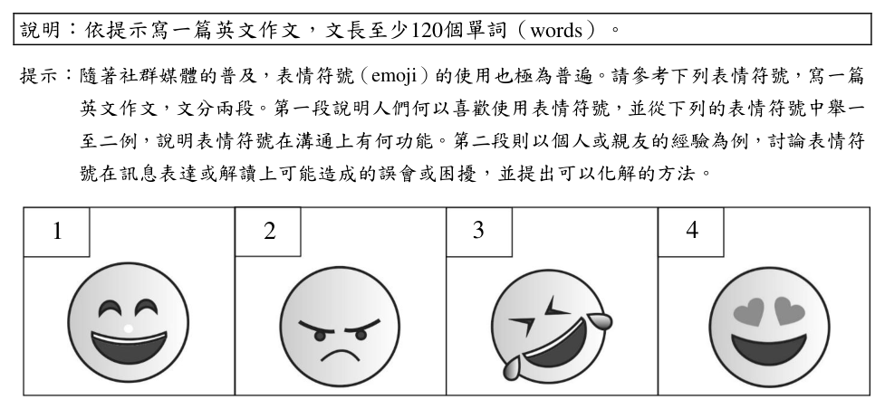
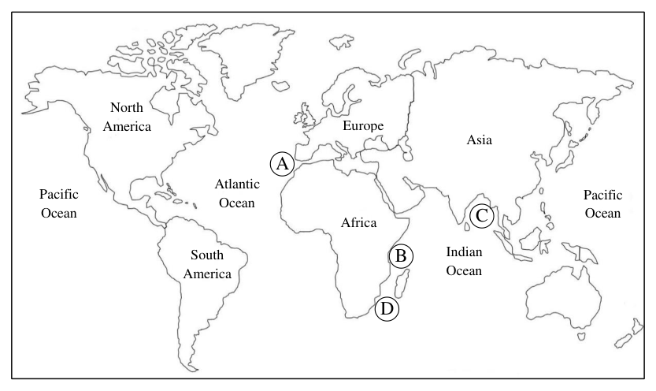

開卷有益 ／
學科能力測驗 ／ 英文 ／ 112 年112 年學科能力測驗英文試題與答案
這一頁是民國 112 年學科能力測驗英文的整份歷屆試題，共 53 題，題目與標準答案出自大考中心 學測歷年試題（依著作權法 §9，考試試題不受著作權保護），其中 53 題附有詳解。以下逐題列出題幹、選項與答案；要計時作答或記錄成績，請用線上練習。
線上作答這一科 →
全部 53 題
第 None 題
中譯英:歷史一再證明，戰爭會造成極為可怕的災難。
標準答案未收錄
詳解與考點 考「一再證明」＋「極為可怕的災難」：History has repeatedly proved/shown that war causes/leads to tremendous/horrific disasters。要點：repeatedly / time and again；disasters 可換 catastrophes；陷阱：遺漏「一再」副詞，或 war 後忘記 causes 接受詞。（AI 整理需查證）
第 None 題
中譯英:避免衝突、確保世界和平應該是所有人類追求的目標。
標準答案未收錄
詳解與考點 考「避免……確保……應是……追求的目標」：Avoiding conflicts and ensuring world peace should be the goal that all human beings pursue / strive for。要點：動名詞主語 Avoiding…and ensuring…；should be；陷阱：目標後漏接 that all humans pursue，或 peace 前遺漏 world。（AI 整理需查證）
第 None 題
英文作文:說明︰依提示寫一篇英文作文，文長至少120個單詞（words）。提示︰隨著社群媒體的普及，表情符號（emoji）的使用也極為普遍。請參考下列表情符號，寫一篇英文作文，文分兩段。第一段說明人們何以喜歡使用表情符號，並從下列的表情符號中舉一至二例，說明表情符號在溝通上有何功能。第二段則以個人或親友的經驗為例，討論表情符號在訊息表達或解讀上可能造成的誤會或困擾，並提出可以化解的方法。 1 2 3 4
標準答案未收錄
詳解與考點 兩段式作文：第一段說明人們喜歡用 emoji 的原因，並舉一至二例說明功能（情感補充、跨語言溝通）；第二段以個人/親友經驗說明 emoji 造成誤會及化解方法。評分重點：舉例具體、兩段任務皆完成、至少 120 字。陷阱：僅描述功能而忽略誤會的個人經驗舉例。（AI 整理需查證）
第 1 題
The bus driver often complains about chewing gum found under passenger seats because it is and very hard to remove.
（A） sticky（B） greasy（C） clumsy（D） mighty答案：（A）
詳解與考點 正解：題眼是口香糖在座椅下「very hard to remove」，需要描述其黏附特性的形容詞。A：sticky 表「黏的、黏稠的」，口香糖因黏著而難清除，故 A 為正解。
B：greasy 表「油膩的」，不等於黏附難清除。
C：clumsy 表「笨拙的」，通常形容人或動作，不能形容口香糖的質地。
D：mighty 表「強大的」，與口香糖的物理特性不合。
本題考點：形容詞語境搭配——描述物品因黏著而難移除時用 sticky；辨析詞義時要同時看被形容的名詞與後面的結果語意。
第 2 題
Jesse is a talented model. He can easily adopt an elegant for a camera shoot.

（A） clap（B） toss（C） pose（D） snap答案：（C）
詳解與考點 正解：題幹描述模特兒為 camera shoot 擺出優雅姿勢，空格需要可與 adopt 搭配的名詞。C 的 pose 表「拍照姿勢」，adopt an elegant pose 即「採取優雅姿勢」，故 C 為正解。
A：clap 表「拍手」，不表示拍照姿勢。
B：toss 表「拋擲」，與 adopt 的搭配及拍攝語境都不合。
D：snap 表「快照」或「啪地折斷」，不表示模特兒擺出的姿勢。
本題考點：英文名詞搭配——adopt a pose 表「擺出姿勢」；先由攝影情境判斷名詞意義，再核對動詞與名詞的慣用搭配。
第 3 題
In order to draw her family tree, Mary tried to trace her back to their arrival in North America.
（A） siblings（B） commuters（C） ancestors（D） instructors答案：（C）
詳解與考點 正解：依 family tree、trace back to their arrival in North America 與四個選項判斷，完整語意應是 Mary 試著把她的祖先追溯到他們初抵北美洲之時。C 的 ancestors 指「祖先」，可構成 trace her ancestors back to their arrival in North America，故 C 為正解。
A：siblings 指「兄弟姊妹」，是同輩親屬，不是可追溯至家族早期的祖先，A 錯誤。
B：commuters 指「通勤者」，與家譜及家族血緣無關，B 錯誤。
D：instructors 指「教師」，與追溯家族來源的語境不合，D 錯誤。
本題考點：名詞語意與搭配——trace someone’s ancestors back to 表「把某人的祖先追溯至」；詞義判準——先由家族關係判定世代，再排除職業或非血緣身分名詞。
第 4 題
Upon the super typhoon warning, Nancy rushed to the supermarket—only to find the shelves almost ______ and the stock nearly gone.
（A） blank（B） bare（C） hollow（D） queer答案：（B）
詳解與考點 正解：句子描述超級颱風警報後民眾搶購，貨架幾乎清空、庫存也快沒了；形容 shelves 幾近空蕩的慣用搭配是 bare shelves。B 的 bare 表「空蕩蕩的、幾近沒有東西的」，符合語境，故 B 為正解。
A：blank 表「空白的」，常形容紙面、表情或螢幕，不用來形容搶購後的貨架狀態，A 錯誤。
C：hollow 表「中空的」，著重物體內部空洞，不能表達貨架上的商品被清空，C 錯誤。
D：queer 表「奇怪的」，語意與貨架幾近無貨無關，D 錯誤。
本題考點：形容詞語境搭配——描述貨架上幾乎沒有商品，用 bare shelves；字義判準——blank 指空白、hollow 指中空、queer 指奇怪，須先辨明形容的是表面、內部或狀態。
第 5 題
Even though Jack said “Sorry!” to me in person, I did not feel any in his apology.
（A） liability（B） generosity（C） integrity（D） sincerity答案：（D）
詳解與考點 正解：句子說 Jack 當面道歉，但說話者在道歉中感受不到某種品質，空格需要「誠意」。D：sincerity 表「誠意、真誠」，feel no sincerity in an apology 指「在道歉中感受不到誠意」，最合語境。
A：liability 表「責任、負債」，不是道歉時要感受到的態度。
B：generosity 表「慷慨」，與道歉的真實性無關。
C：integrity 表「正直、誠信」，通常指人的整體品格，不如 sincerity 直接描述一次道歉的誠意。
本題考點：名詞語境搭配——apology 常與 sincerity 搭配，指道歉是否真誠；近義字辨析——integrity 側重長期正直品格，sincerity 側重當下言語或情感的真誠。
第 6 題
My grandfather has astonishing powers of . He can still vividly describe his first day at school as a child.
（A） resolve（B） fraction（C） privilege（D） recall答案：（D）
詳解與考點 正解：題幹以祖父仍能清楚描述童年入學首日，題眼是驚人的記憶能力。D：recall 意為「記憶力、回憶能力」，powers of recall 是固定搭配，故 D 為正解。
A：resolve 意為「決心、解決」，不指記憶能力。
B：fraction 意為「一小部分、分數」，語意不合。
C：privilege 意為「特權」，語意不合。
本題考點：名詞搭配——powers of recall 指記憶或回想的能力；語境判準——能清楚重述久遠經驗，應選與記憶相關的名詞。
第 7 題
Recent research has found lots of evidence to the drug company’s claims about its “miracle” tablets for curing cancer.
（A） provoke（B） counter（C） expose（D） convert答案：（B）
詳解與考點 正解：題幹描述研究發現大量證據，與藥廠宣稱的「神奇」抗癌錠功效相牴觸，須選能表示「反駁」語意的動詞，構成 evidence to counter a claim 的搭配。B：counter 表「反駁、抵銷」，lots of evidence to counter claims 指大量證據反駁那些宣稱，語意最準確，故 B 為正解。
A：provoke 表「激起、引發」，不能表示證據反駁某項主張，A 錯誤。
C：expose 表「揭露」，可揭露問題或真相，但此處需要的是證據與宣稱相對抗的關係，C 錯誤。
D：convert 表「轉換、使改變」，與反駁藥效宣稱的語境不合，D 錯誤。
本題考點：英文動詞語意與搭配——counter a claim 表反駁一項主張；語境判準——evidence 與 claim 呈對立時，選能表反駁或抵銷的動詞，而非引發、揭露或轉換。
第 8 題
Corrupt officials and misguided policies have the country’s economy and burdened its people with enormous foreign debts.
（A） crippled（B） accelerated（C） rendered（D） ventured答案：（A）
詳解與考點 正解：題幹說腐敗官員與錯誤政策使經濟惡化，並使人民背負龐大外債，題眼是嚴重損害。A：crippled 意為「使癱瘓、嚴重損害」，crippled the country’s economy 與後文相符，故 A 為正解。
B：accelerated 意為「加速」，不合經濟受重創的語意。
C：rendered 通常接受詞補語，如 rendered the economy weak；此處後面沒有補語，句法不合。
D：ventured 意為「冒險」，不合經濟受損語意。
本題考點：動詞語境——由 enormous foreign debts 判斷經濟受嚴重打擊；搭配判準——cripple 可直接接受損害對象，render 通常需補語。
第 9 題
As a record number of fans showed up for the baseball final, the highways around the stadium were with traffic all day.
（A） choked（B） disturbed（C） enclosed（D） injected答案：（A）
詳解與考點 正解：句子關鍵是 highways around the stadium were ______ with traffic，描述大量球迷造成高速公路全天壅塞。A：choked 表「塞滿、阻塞」，be choked with traffic 是道路交通壅塞的固定搭配，故 A 為正解。
B：disturbed 表「受打擾的、擾亂的」，可形容人或秩序受干擾，不能搭配 with traffic 表示道路塞車，B 錯誤。
C：enclosed 表「被圍住的」，著重被物體包圍，與 traffic 的壅塞狀態不合，C 錯誤。
D：injected 表「注射、注入」，通常接藥物、液體或資金等受詞，不能描述道路被車流塞滿，D 錯誤。
本題考點：動詞語意與固定搭配——描述道路塞車用 be choked with traffic；語境判準——先看 with 後的名詞，traffic 要求能表「阻塞、擠滿」的動詞，而非干擾、圍住或注入。
第 10 題
Studies show that the unbiased media are in fact often deeply influenced by political ideology.
（A） undoubtedly（B） roughly（C） understandably（D） supposedly答案：（D）
詳解與考點 正解：題幹以 unbiased 與 deeply influenced by political ideology 形成反差，空格須表「據稱客觀」而非真正客觀。D：supposedly 表「據稱、表面上」，帶有保留或反諷意味，符合語境，故 D 為正解。
A：undoubtedly 表「毫無疑問地」，會強化媒體確實不偏不倚，與後句的轉折衝突，錯誤。
B：roughly 表「大約、粗略地」，不能修飾媒體客觀與否的立場，錯誤。
C：understandably 表「可以理解地」，無法表達表面客觀、實受意識形態影響的反差，錯誤。
本題考點：副詞語意——讀到事實與表象相反的句型時，選能保留距離的副詞；supposedly unbiased 表「據稱不偏不倚」，常帶反諷或質疑。
In certain forests, when you look up you will see a network of cracks formed by gaps between the outermost edges of tree branches. It looks like a precisely engineered jigsaw puzzle, each branch growing just perfectly so it almost, 11 , touches the neighboring tree. This beautiful phenomenon is called crown shyness. Scientists have been discussing crown shyness since the 1920s, proposing 12 explanations for the phenomenon. Some researchers point out that as trees often grow close together, treetops can easily collide and break when swayed by the wind. In order to protect their branches from breakage, trees maintain “shyness gaps”—spaces large enough to prevent them from touching their neighbors. Other scientists suggest that plants, like animals, 13 resources—nutrients, water, space, and light. In forested areas with thick tree crowns, there is intense struggle for these resources. Gaps in the treetops resulting from crown shyness may allow trees to increase their 14 light and enhance photosynthesis. Additionally, by having branches that do not touch those of their neighbors, trees may be able to limit the spread of leaf-eating insects, and potentially also the transmission of diseases from tree to tree. 15 decades of investigation, there is no consensus on exactly what causes the beautiful and mysterious phenomenon of crown shyness. (A) in no time (A) universal (A) get over (A) reliance on
第 11 題
（A） in no time（B） by all means（C） but not quite（D） and pretty much答案：（C）
詳解與考點 正解：空格置於 almost 之後，句意是枝條生長得幾乎碰到鄰樹、卻仍留有縫隙。C 的 but not quite 意為「但還不完全是」，almost but not quite touches 表「幾乎碰到但未真正碰到」，呼應 crown shyness，故 C 正確。
A：in no time 意為「立刻」，描述時間快慢，不能補出「尚未碰到」的轉折。
B：by all means 意為「務必、當然可以」，用於允諾或強調，不合枝條距離的語意。
D：and pretty much 意為「而且大致上」，不能與 almost 形成「幾乎但未及」的精確限制。
本題考點：副詞片語語意——almost but not quite 表「幾乎但尚未」；依上下文的 crown shyness gaps 判斷，需選能保留枝條不接觸的片語。
第 12 題
（A） universal（B） productive（C） conventional（D） multiple答案：（D）
詳解與考點 正解：句子說科學家自1920年代以來一直為樹冠羞避現象提出解釋，後文隨即列出枝梢碰撞、資源競爭、蟲害與疾病傳播等不同說法，空格需表「多種」。D 的 multiple 表「多樣的、多個的」，符合語境，故 D 為正解。
A：universal 表「普遍的、全體適用的」，不能表達有好幾種不同解釋，A 錯誤。
B：productive 表「多產的、有效率的」，不修飾學說數量，B 錯誤。
C：conventional 表「傳統的、慣例的」，著重是否合乎慣例，不表示解釋的數量，C 錯誤。
本題考點：形容詞語意辨析——multiple explanations 表多種解釋；上下文判準——後文若逐項列舉不同原因，空格應選能表數量或多樣性的字，而非表普遍、效率或傳統的字。
第 13 題
（A） get over（B） compete for（C） give way to（D） make up for答案：（B）
詳解與考點 正解：題幹語境指出植物如同動物會爭奪養分、水分、空間與光源，需選表「競爭、爭奪」的動詞片語。B：compete for 表「爭奪、競爭取得」，可接養分、水分等資源，故為正解。
A：get over 表「克服」，不表示與他者競爭資源。
C：give way to 表「讓步給」，語意與爭奪相反。
D：make up for 表「彌補」，須有補償不足或損失的語境。
本題考點：動詞片語語意辨析——先由受詞判斷動作關係；涉及有限資源且多方競逐時，用 compete for，克服困難用 get over，彌補損失用 make up for。
第 14 題
（A） reliance on（B） exposure to（C） sensitivity to（D） reflection on答案：（B）
詳解與考點 正解：題幹說樹冠間留有空隙，使樹木得到更多陽光進行光合作用；空格需填「接觸到」某物的名詞片語。B：exposure to 表「接觸、暴露於」，exposure to sunlight 指接觸陽光，符合語意，故 B 為正解。
A：reliance on 表「依賴」，不能表示接觸陽光的機會。
C：sensitivity to 表「對事物敏感」，不合增加光照的語意。
D：reflection on 表「對事物的反思」，不合自然現象說明。
本題考點：英文名詞片語搭配——exposure to＋事物表接觸或暴露於；語意判斷——光合作用情境中，空隙增加的是接觸陽光的機會。
第 15 題
（A） For（B） Besides（C） Despite（D） Concerning答案：（C）
詳解與考點 正解：題眼是「數十年研究」後接「仍無共識」，前後為讓步對比。C：Despite 表「儘管」，Despite decades of investigation 意為「儘管經過數十年調查」，故 C 為正解。
A：For 表原因，不能連接研究時間與「仍無共識」的讓步關係。
B：Besides 表「此外」，只補充資訊，不表示轉折讓步。
D：Concerning 表「關於」，後面通常接討論主題，不能引出此處的對比。
本題考點：連接詞語意——看到「長期努力」與「結果仍未達成」並列時，使用 despite 表讓步；Despite 後接名詞片語，如 decades of investigation。
(B) by all means (B) productive (B) compete for (B) exposure to (B) Besides (C) but not quite (C) conventional (C) give way to (C) sensitivity to (C) Despite (D) and pretty much (D) multiple (D) make up for (D) reflection on (D) Concerning Gravity has been at the top of the science agenda since the start of Mars missions. In the earlier days of space travel, scientists tried to overcome the force of gravity so that a rocket could shoot 16 Earth’s pull in order to land humans on the moon. Today, they are more interested in how reduced gravity affects the astronauts’ 17 condition. Our bodies have evolved to exist within Earth’s gravity (1 g), not in the weightlessness of space (0 g) or the microgravity of Mars (0.3 g). When on Earth, we have more fluids in our lower body because they are pulled down by Earth’s gravity. However, with the absence of gravity in the outer space, our body fluids 18 , shifting toward the upper body and the head. As a result, the astronauts have swollen, puffy faces, very much resembling that of the round-headed Charlie Brown in the famous comic strip. This “Charlie Brown effect” will be more 19 when the astronauts go on their Mars missions, which will take about three years to complete, much longer than missions to the moon. Moreover, the effect is often 20 space motion sickness, headaches, and nausea. Such a syndrome is considered the top health risk for the astronauts, and scientists are still trying to figure out how it may be prevented.
第 16 題
（A） back to（B） free of（C） long before（D） straight on答案：（B）
詳解與考點 正解：句子說火箭必須克服地球引力才能登陸月球，空格需要表「擺脫、不受束縛」的片語。B：free of 表「免於、擺脫」，可表火箭擺脫 Earth’s pull，故 B 為正解。
A：back to 表「回到」，不能表擺脫引力，A 錯誤。
C：long before 表「很久以前」，是時間副詞片語，不合句意，C 錯誤。
D：straight on 表「一直向前」，只描述前進方向，未表克服引力，D 錯誤。
本題考點：片語語意搭配——依前後語境判斷動作與結果；太空情境中，overcome gravity 對應 free of Earth’s pull。
第 17 題
（A） physical（B） perceptual（C） mental（D） external答案：（A）
詳解與考點 正解：空格後的 condition 由後文體液分布、臉部浮腫與噁心等身體變化說明，題眼是生理影響。A：physical 意為「身體的、生理的」，physical condition 正指太空人的身體狀況，故 A 為正解。
B：perceptual 意為「知覺的」，不合體液與臉部變化。
C：mental 意為「心理的」，後文未在談心理狀態。
D：external 意為「外在的」，不能準確指身體的生理狀況。
本題考點：形容詞搭配——physical condition 指生理或身體狀態；篇章判準——依後文列舉的現象決定詞義範圍。
第 18 題
（A） redistribute（B） redistributed（C） redistributing（D） being redistributed答案：（A）
詳解與考點 正解：空格的主詞是複數名詞 body fluids，句子描述失重時體液主動重新分布，後面的 shifting toward the upper body and the head 是補充動作的分詞片語，因此需要複數主詞的現在式述語動詞。A 的 redistribute 表「重新分布」，符合語意與句型，故 A 為正解。
B：redistributed 是過去式或過去分詞；此處沒有助動詞或 be 動詞可構成完成式、被動式，不能單獨作本句述語，B 錯誤。
C：redistributing 是現在分詞，不能單獨充當主要述語動詞；句中已有 shifting 分詞片語，仍須有限動詞，C 錯誤。
D：being redistributed 是被動進行式，表示「正被重新分布」；題意是體液本身在失重下移向上半身，應用主動的 redistribute，且此處不需被動進行語態，D 錯誤。它看起來對，是因為體液確實受到失重環境影響，但英文仍以 body fluids 主動作 redistribute 表示其分布改變。
本題考點：主詞與動詞一致——複數主詞 body fluids 搭配現在式原形動詞 redistribute；分詞與述語辨析——shifting 是補充說明的分詞片語，句子仍須有完整的有限動詞。
第 19 題
（A） contagious（B） unusual（C） severe（D） aggressive答案：（C）
詳解與考點 正解：題幹以火星任務「約三年、遠長於登月任務」說明 Charlie Brown effect 會加劇，空格須填可與 more 搭配、表程度加深的形容詞。C：severe 表「嚴重的」，more severe 即「更嚴重」，符合長期微重力使效應加劇的語境，故 C 為正解。
A：contagious 表「會傳染的」，不能描述體液上移造成的生理效應程度。
B：unusual 表「不尋常的」，只能說現象罕見，不能表達任務較久而加劇。
D：aggressive 表「侵略性的、好鬥的」，不用於形容這種生理症狀。
本題考點：形容詞語意與程度搭配——看到 more＋形容詞，先判斷後文要比較的是程度或性質；描述症狀因條件延長而加劇，選 severe，不以 unusual、aggressive 等不合語境的形容詞代替。
第 20 題
（A） varied with（B） brought about（C） transferred from（D） accompanied by答案：（D）
詳解與考點 正解：空格後接 space motion sickness、headaches 與 nausea，題眼是 effect is often ______，需要表「某效應伴隨症狀」的過去分詞片語。D：accompanied by 表「伴隨著」，此效應往往伴隨太空暈動症、頭痛與噁心，語意與句型都相符，故 D 為正解。
A：varied with 表「隨……而變化」，須說明效應隨何項因素改變，不能接列舉的症狀，A 錯誤。
B：brought about 表「造成、引起」，主語應是造成結果的原因；此處是說效應本身帶有何種症狀，不合語意，B 錯誤。它看起來對，是因為症狀確實可能由此效應引起，但句子要表達的是「伴隨」而非因果。
C：transferred from 表「從……轉移而來」，後面應接來源，不能接症狀項目，C 錯誤。
本題考點：動詞片語搭配——be accompanied by＋症狀／事物表「伴隨著」；語意判準——空格後若列舉症狀，先辨別句子要表伴隨關係還是因果關係。
Water makes up more than half of our body weight. To sustain this amount of fluid in our bodies, plain water is considered our best choice, for it contains no sugar and no calories. Yet, is water always the healthiest drink we can 21 ? Well, it depends on who and where we are, and what we’re doing. Obviously, a physically 22 person with an outdoor job under the sun will need to drink more fluid than a desk-bound person who lives and works in an air-conditioned place. But there’s more to it than that. When a person sweats, he loses water and salt, so he needs to replace both. Replacing lost fluid with just plain water means the body has too much water and not enough salt. To 23 things out, the body will get rid of water by producing urine. For this reason, milk can actually be more 24 than drinking water. Milk naturally contains salt and lactose, a sugar which the human body needs in small amounts to help stimulate water 25 . Coconut water, which contains salt and carbohydrates, is also more functional than water at restoring and maintaining a normal fluid 26 after exercise. For the average person, however, water remains a very good 27 for keeping hydrated—if you know how to drink it. The secret is: Never wait until the body is telling you you’re thirsty, since there must already have been significant changes in your body for it to eventually 28 your consciousness. At that point, it might be well past the best moment to take in fluid. Also, drinking a lot of liquid in one go can cause more water to 29 the body quickly and come out as urine. To 30 this, you need to drink water throughout the day to maintain your hydration levels.
第 21 題
（A） absorption（B） active（C） alert（D） combat（E） option（F） effective（G） even（H） status（I） pass through（J） reach for答案：（J）
詳解與考點 正解：題幹關鍵結構「the healthiest drink we can ___」在 can we 後需要動詞片語，且全文討論可選擇的飲品。J：reach for 意為「伸手拿取、選擇」，can reach for a drink 指可選擇某種飲料，語意與文脈相符，故 J 為正解。
A：absorption 是「吸收」的名詞，不能置於 can we 後作動詞。
B：active 是「活躍的」形容詞，不能作此處動詞。
C：alert 是「警覺的」形容詞或「警告」動詞，均不表示選擇飲品。
D：combat 是「對抗」，受詞若是飲料語意不通。
E：option 是「選項」名詞，不能作 can we 的動詞。
F：effective 是「有效的」形容詞，詞性不合。
G：even 是「使平衡」或「甚至」，不能表選擇飲料。
H：status 是「狀態」名詞，詞性不合。
I：pass through 是「穿過、通過」，不合「選擇最健康飲品」的語意。
本題考點：文意選填的詞性判斷——情態動詞 can 後接原形動詞；動詞片語搭配——reach for 可表「伸手拿取、選擇」，先以句型排除詞性不合的選項，再以段落主旨確認語意。
第 22 題
（A） absorption（B） active（C） alert（D） combat（E） option（F） effective（G） even（H） status（I） pass through（J） reach for答案：（B）
詳解與考點 正解：題幹「a physically ___ person with an outdoor job」以 physically 修飾形容詞，並以戶外日曬工作說明活動量大。B：active 意為「活躍的、活動量大的」，a physically active person 指身體活動量高的人，故 B 為正解。
A：absorption 是「吸收」的名詞，不能修飾 person。
C：alert 是「警覺的」，描述警醒狀態，非體能活動量。它看起來對，是因為 alert 可形容人，但與 physically 及戶外工作所強調的活動量不合。
D：combat 是「對抗」動詞或名詞，詞性與語意均不合。
E：option 是「選項」名詞，不能修飾 person。
F：effective 是「有效的」形容詞，不描述人的運動或勞動程度。
G：even 是「甚至」或「使平衡」，詞性不合。
H：status 是「狀態」名詞，不能修飾 person。
I：pass through 是「穿過」，動詞片語不能置於 physically 與 person 間。
J：reach for 是「伸手拿取、選擇」，動詞片語，詞性不合。
本題考點：文意選填的詞性與搭配——physically 後常接描述身體活動的形容詞；語境判斷——由戶外日曬工作、需要較多水分，判定空格須表「活動量大」。
第 23 題
（A） absorption（B） active（C） alert（D） combat（E） option（F） effective（G） even（H） status（I） pass through（J） reach for答案：（G）
詳解與考點 正解：前句說只補充水分會使體內水分過多、鹽分不足，空格後的 things out 需要表示「使平衡」的動詞。G 的 even 可作動詞，even things out 為固定片語，意為「使事情平衡」，最符合語意，故 G 為正解。
A：absorption 為名詞，意為「吸收」，不能作動詞與 things out 搭配。
B：active 為形容詞，意為「活躍的」，不能填入動詞位置。
C：alert 為形容詞或動詞，意為「警覺的／警告」，但 alert things out 不是慣用搭配，也無「使水鹽平衡」之意。
D：combat 可作動詞，意為「對抗」，但不與 things out 構成固定搭配，語意也不是使比例平衡。
E：option 為名詞，意為「選項、選擇」，詞性不合。
F：effective 為形容詞，意為「有效的」，不能作此處的及物動詞。
H：status 為名詞，意為「狀態」，詞性不合。
I：pass through 為動詞片語，意為「通過」，後面可直接接受詞，但不能接 things out 表示平衡。
J：reach for 為動詞片語，意為「伸手拿取」，須以 for 引出目標，與 things out 的結構及水鹽平衡語意皆不合。
本題考點：文意選填與固定搭配——先由前後文判斷水鹽比例失衡，再辨識 even things out 表「使平衡」；詞性判準——空格後接 things out 時，須選可作及物動詞並能構成慣用語的字。
第 24 題
（A） absorption（B） active（C） alert（D） combat（E） option（F） effective（G） even（H） status（I） pass through（J） reach for答案：（F）
詳解與考點 正解：題幹語境比較牛奶與白開水的補水效果，空格需要形容詞說明牛奶的效果更好。F：effective意為「有效的」，more effective than water表示「比水更有效」，能說明牛奶含鹽與乳糖而補水效果較佳，故F正確。
A：absorption是名詞「吸收」，不能直接放在more後作比較補水效果的形容詞，錯誤。
B：active意為「活躍的」，不用來表示補水效力，錯誤。
C：alert意為「警覺的」，語意不合，錯誤。
D：combat意為「對抗」，詞性與語意皆不合，錯誤。
E：option意為「選項」，是名詞，不能描述補水效果，錯誤。
G：even意為「甚至、平坦的」，不能表示補水較有效，錯誤。
H：status意為「狀態、地位」，是名詞，語意不合，錯誤。
I：pass through意為「穿過」，是動詞片語，不能置於more後比較效果，錯誤。
J：reach for意為「伸手拿取、努力爭取」，是動詞片語，語意不合，錯誤。
本題考點：篇章選填——先由more判定空格需要可比較的形容詞；字義搭配——effective可形容方法或事物「有效」，more effective than表示「比……更有效」。
第 25 題
（A） absorption（B） active（C） alert（D） combat（E） option（F） effective（G） even（H） status（I） pass through（J） reach for答案：（A）
詳解與考點 正解：空格所在處要表達乳糖有助刺激水分的「吸收」，且 water 後需要名詞。A：absorption 為名詞，water absorption 意為「水分吸收」，能完整表達腸道吸收水分的概念，故 A 為正解。
B：active 為形容詞，不能作為 water 後所需的名詞。
C：alert 為形容詞或動詞，語意不表水分吸收。
D：combat 為「對抗」，語意不合。
E：option 為「選項」，語意不合。
F：effective 為形容詞，不能填入此名詞位置。
G：even 為副詞、形容詞或動詞，語意與詞性均不合。
H：status 為「狀態」，不表吸收作用。
I：pass through 為動詞片語，不能填入名詞位置。
J：reach for 為動詞片語，意為「伸手拿取」，語意不合。
本題考點：篇章選填——先由空格前後判斷詞性，再以固定搭配驗證語意；名詞搭配——water absorption 表「水分吸收」。
第 26 題
（A） absorption（B） active（C） alert（D） combat（E） option（F） effective（G） even（H） status（I） pass through（J） reach for答案：（H）
詳解與考點 正解：題幹「restoring and maintaining a normal fluid ___」需要名詞，且前文談流汗後水分與鹽分的平衡。H：status 意為「狀態」，fluid status 指體液狀態，椰子水可恢復並維持正常體液狀態，故 H 為正解。
A：absorption 是「吸收」，fluid absorption 指吸收過程，不能與 restoring and maintaining 所指的正常體液結果相配。
B：active 是「活躍的」形容詞，詞性不合。
C：alert 是「警覺的」形容詞或「警告」動詞，不表體液狀態。
D：combat 是「對抗」，語意不合。
E：option 是「選項」名詞，不表生理狀態。
F：effective 是「有效的」形容詞，詞性不合。
G：even 作動詞可表「使平衡」，但 normal fluid even 不成搭配。它看起來對，是因為前文確實談水與鹽的平衡；然而此處需要的是被恢復與維持的名詞結果。
I：pass through 是「穿過」，動詞片語，詞性不合。
J：reach for 是「伸手拿取、選擇」，動詞片語，詞性不合。
本題考點：文意選填的名詞搭配——normal fluid status 指正常體液狀態；句構判斷——restoring and maintaining 後接可被恢復與維持的名詞，先鎖定詞性再核對醫學語境。
第 27 題
（A） absorption（B） active（C） alert（D） combat（E） option（F） effective（G） even（H） status（I） pass through（J） reach for答案：（E）
詳解與考點 正解：題幹說白開水對維持體內水分是很好的選擇，空格需填可指「選擇」的名詞。E：option 表「選項、選擇」，a very good option for keeping hydrated 表示「維持水分的很好選擇」，故 E 為正解。
A：absorption 表「吸收」，不是可供選擇的飲品或方法。
B：active 是形容詞，不能直接作 a very good 後的名詞中心語。
C：alert 可作形容詞或名詞「警戒」，語意不合。
D：combat 表「戰鬥、對抗」，不合飲水選擇的語境。
F：effective 是形容詞，不能取代此處所需的名詞。
G：even 是副詞或形容詞，語法與語意皆不合。
H：status 表「狀態、身分」，不表示可選方案。
I：pass through 表「穿過」，為動詞片語，不能作名詞補語。
J：reach for 表「伸手拿取、嘗試取得」，為動詞片語，語法不合。
本題考點：英文篇章選填——先由冠詞 a、形容詞 very good 判斷空格須為可數名詞；單字語意——option 表可供選擇的方案，能與 for keeping hydrated 自然搭配。
第 28 題
（A） absorption（B） active（C） alert（D） combat（E） option（F） effective（G） even（H） status（I） pass through（J） reach for答案：（C）
詳解與考點 正解：題幹語境是口渴訊號最終「讓意識察覺」，空格須放能帶受詞 your consciousness 的動詞。C 的 alert 作動詞表「提醒、使察覺」，eventually alert your consciousness 意為「最終讓你的意識察覺到」，故 C 為正解。
A：absorption 是名詞「吸收」，不能直接作謂語帶 your consciousness。
B：active 是形容詞「活躍的」，詞性不合。
D：combat 是動詞「對抗」，語意是與意識對抗，不合口渴訊號傳遞的情境。
E：option 是名詞「選擇」，詞性不合。
F：effective 是形容詞「有效的」，詞性不合。
G：even 是副詞或形容詞，不能在此充當使役動詞。
H：status 是名詞「狀態、身分」，詞性不合。
I：pass through 表「穿過」，不表示使意識察覺，且與受詞搭配不合。
J：reach for 表「伸手拿取、試圖取得」，不表示提醒意識。
本題考點：英文文意選填——先由句法確認空格需及物動詞，再由受詞與語境選擇 alert somebody to something 的「使察覺」用法。
第 29 題
（A） absorption（B） active（C） alert（D） combat（E） option（F） effective（G） even（H） status（I） pass through（J） reach for答案：（I）
詳解與考點 正解：題幹語境說一次喝下大量液體，會使水分快速穿過身體；空格須填可接在 water 後的動詞片語。I：pass through 表「穿過、快速通過」，cause water to pass through the body 語意精確，故 I 為正解。
A：absorption 是名詞「吸收」，不能直接作 water 的動作，錯誤。
B、C、E、F、G、H：active、alert、option、effective、even、status 分別為形容詞、形容詞、名詞、形容詞、副詞、名詞，皆不符此處需要動詞片語的句法位置。
D：combat 表「對抗」，語意不合水分在體內通過的過程，錯誤。
J：reach for 表「伸手拿取；爭取」，不表水分通過身體，錯誤。
本題考點：篇章選填的詞性判讀——先由 cause＋受詞＋原形動詞判定空格需動詞片語；片語語意——pass through the body 表物質穿過身體。
第 30 題
（A） absorption（B） active（C） alert（D） combat（E） option（F） effective（G） even（H） status（I） pass through（J） reach for答案：（D）
詳解與考點 正解：D。題幹的 To 30 this 指向前句「一次喝下大量液體會很快通過身體並排成尿液」這個需避免的結果，應選能接受詞、表「對抗／防止」的動詞。D：combat 表「對抗、防止」，To combat this 即「為防止這種情況」，與後文建議整天分次喝水相符，故 D 為正解。
A：absorption 是名詞「吸收」，不能直接置於 To 後作動詞。
B：active 是形容詞「活躍的」，詞性不合。
C：alert 可作形容詞「警覺的」或動詞「警告」，不表防止水分迅速排出。
E：option 是名詞「選項」，詞性與語意皆不合。
F：effective 是形容詞「有效的」，不能作 To 後的動詞。
G：even 可作副詞或形容詞，不表處理、避免前述情況。
H：status 是名詞「狀態」，詞性不合。
I：pass through 表「穿過」，正是前句大量水分迅速通過身體的現象，不能表示防止它。它看起來對，是因為它重現了前句的動作，但 To 後需要的是處理該問題的動詞。
J：reach for 表「伸手拿取／爭取」，不合防範語意。
本題考點：文意選填的詞性與語意——不定詞 To 後先判定須接原形動詞；指示詞 this 指回前述不利結果時，選能表處理、防止或對抗的動詞，再以後文的解決方法驗證。
Have you ever thought of “coloring” the names of the days of the week? When you listen to someone speaking, do you see a rainbow of colors? Or perhaps Mozart’s music tastes like an apple pie to you? If so, it is very likely that you have synesthesia. Synesthesia is a condition in which people’s senses intermix. In some cases, people with synesthesia may experience colors when they hear, read, or even think of letters and numbers. In others, words can trigger a real sensation of taste on their tongue. 31 In the early 1990s, however, scientists noticed that synesthetic colors do not change over time. When asked what color is evoked by a letter or number, synesthetic people would persistently give the same answer even if tested months or years apart. 32 The most compelling support, however, comes from brain scans, which show that color processing areas in the brain light up when these people listen to certain words. Is synesthesia genetically inherited or acquired after birth? Scientists agree that synesthesia has a genetic basis, because it frequently runs in families. But an actual synesthesia gene (or genes) has not been identified yet. 33 For example, the flavors people with taste-word synesthesia experience are usually childhood flavors, such as chocolate or strawberries. Also, people with color-music synesthesia more often than not have had early musical training. Once thought to be extremely rare, synesthesia is now found to affect about one to four percent of the population. 34 As is often observed, most of us tend to associate lower notes with darker colors and higher notes with brighter colors. Researchers further point out that in most people synesthesia is active only during the first months of their infancy, while this ability remains forever in certain individuals.
第 31 題
（A） This consistency serves as a proof that synesthesia is real.（B） Meanwhile, environmental influences seem to shape a person’s synesthesia.（C） People with synesthesia used to be accused of making their experiences up.（D） Some studies even show that people may all be synesthetic to some degree.答案：（C）
詳解與考點 正解：空格後的「In the early 1990s, however」以 however 引出科學證據，題眼是前後的轉折關係。C：People with synesthesia used to be accused of making their experiences up 意為共感覺者過去曾被指控捏造經驗，正好銜接後文發現其顏色感受長期一致的證據，故 C 為正解。
A：This consistency 指後文才要說明的顏色一致性，置於前文會造成指涉無所本。
B：環境因素影響共感覺的內容屬後段討論遺傳與成長經驗時的主題，放此處跳離證據脈絡。
D：人類可能皆有某種程度共感覺，是文末談嬰兒期能力的總結，不能接在早期質疑與科學證據之間。
本題考點：篇章銜接——however 常提示前後觀點轉折；指涉判斷——this consistency 必須先有一致性內容可指，依代名詞的先行內容排除錯置句。
第 32 題
（A） This consistency serves as a proof that synesthesia is real.（B） Meanwhile, environmental influences seem to shape a person’s synesthesia.（C） People with synesthesia used to be accused of making their experiences up.（D） Some studies even show that people may all be synesthetic to some degree.答案：（A）
詳解與考點 正解：前句說共感覺者隔數月或數年仍對同一字母、數字給出相同顏色，題眼是反覆測驗的「一致性」。A 的 This consistency 正好指代此前一致結果，並說明它可證明共感覺是真實現象，銜接最自然，故為正解。
B：Meanwhile 需要轉入同時存在的另一面向，但後文接的是腦部掃描的證據，非環境影響。
C：過去曾被指控捏造經驗屬背景資訊，無法直接承接「結果一致」並引出腦部證據。
D：Some studies even show 會把論述轉向一般人都有某種程度的共感覺，與本段正在建立真實性的證據鏈不合。
本題考點：篇章銜接——先找指示詞的回指對象；This consistency 對應前句反覆測驗結果一致，並與後句的 brain scans 共同構成證據。
第 33 題
（A） This consistency serves as a proof that synesthesia is real.（B） Meanwhile, environmental influences seem to shape a person’s synesthesia.（C） People with synesthesia used to be accused of making their experiences up.（D） Some studies even show that people may all be synesthetic to some degree.答案：（B）
詳解與考點 正解：空格前說共感覺具有遺傳基礎但尚未找到相關基因，後文隨即舉童年口味與早期音樂訓練為例，題眼是轉入後天環境的影響。B：Meanwhile 表「同時、另一方面」，引出環境因素也會塑造一個人的共感覺，能統領後文兩個例子，故 B 為正解。
A：This consistency 指前段受試者長期回答一致，該論點應接在一致性描述後，不能銜接基因與童年經驗，錯誤。
C：本句談曾遭質疑造假，應置於科學家發現回答一致、證明現象可信之前，位置不合，錯誤。
D：本句談人人或多或少都有共感覺，應接在後文一般人對音高與色彩的聯想之前，不能直接引出童年經驗與音樂訓練，錯誤。
本題考點：篇章銜接——先辨認前後段的論述關係，再用後文例證回推主題句；基因尚未確認後接童年經驗與訓練，應選引入環境影響的句子。
第 34 題
（A） This consistency serves as a proof that synesthesia is real.（B） Meanwhile, environmental influences seem to shape a person’s synesthesia.（C） People with synesthesia used to be accused of making their experiences up.（D） Some studies even show that people may all be synesthetic to some degree.答案：（D）
詳解與考點 正解：題眼在前句「共感覺影響約 1% 至 4% 的人口」及後句「大多數人傾向把低音聯想為深色、高音聯想為亮色」，需用一句把少數人的共感覺延伸到一般人的感官聯想。D：Some studies even show that people may all be synesthetic to some degree 表「有些研究甚至顯示，人們可能都具有某種程度的共感覺」，正好引出後文的一般性觀察，故 D 為正解。
A：This consistency serves as a proof that synesthesia is real 中的 This consistency 須承接「顏色長期一致」的實驗結果；該結果在第 31 空後才出現，放在第 34 空缺乏指涉對象，A 錯誤。
B：Meanwhile, environmental influences seem to shape a person’s synesthesia 談環境如何塑造個人的共感覺，應接在遺傳基礎尚不足以解釋一切、並舉童年味道與早期音樂訓練的段落之前，不能承接盛行率與一般人的音色聯想，B 錯誤。
C：People with synesthesia used to be accused of making their experiences up 談過去對共感覺者真實性的質疑，應放在科學證據證明其現象真實的段落之前；它看起來對，是因為全文都在介紹共感覺，但此處後文轉為「多數人」的共同傾向，銜接不合，C 錯誤。
本題考點：篇章結構——先找空格前後的指涉與邏輯橋梁，盛行率的少數現象接到多數人的共同聯想，應選能把「少數」延伸為「某種程度人人皆有」的句子；代名詞判準——含 This consistency 的句子必須緊接其所指的穩定一致現象。
When did people first experience the joy of the hula hoop? Although the term did not emerge until the 18th century, toy hoops twirled around the waist, limbs, or neck can be traced back to ancient times. As early as 1000 BC, Egyptian children played with hoop toys of dried grapevine. They threw, jumped, and slung them around their bodies as we do today. They also struck them with sticks to roll them down the road. Hoop rolling was also popular in ancient Greece. Their hoops, often made of metal, were not merely toys for Greek children but served as exercise devices as well. In the 14th century, hoops were popular as a form of recreation in Great Britain. The craze for hoops even resulted in dislocated backs and heart attacks, according to medical records. The term “hula,” however, did not enter the English language until the 1700s, when British sailors first witnessed hula dancing in the Hawaiian Islands. Though no hoops were used, the movements of the ritual dances looked very similar to those in hooping. Thus “hula” and “hoop” came together, resulting in the term “hula hooping.” Hoops spun their way through the cultures of pre-colonial America as well. Often considered as representing the circle of life, hoops featured prominently in the ritual dances of Native Americans. Dancers used small reed hoops as symbolic representations of animals such as eagles or snakes. With very rapid movements, they used the hoops to construct the symbolic forms around their bodies. The hula hoop gained international popularity in the late 1950s, when a plastic version was successfully marketed by California’s Wham-O toy company. Twenty-five million plastic hoops were sold in less than four months. The hula hoop “fad” is still going strong today.
第 35 題
What question does the passage answer?
（A） How was the word “hula-hooping” derived?（B） Why did Wham-O start making hula hoops?（C） Where did Hawaiian hula dancing come from?（D） What was the favorite toy of ancient Egyptian kids?答案：（A）
詳解與考點 正解：文章由古代圓環玩具的 hoop 談到英國水手看見夏威夷 hula 舞，因舞姿類似玩圓環而使 hula 與 hoop 結合成 hula-hooping；全文回答的是這個詞如何得來，故 A 為正解。
B：文章只說 Wham-O 成功行銷塑膠呼拉圈，未說明公司為何開始製造，B 錯誤。
C：文中提到水手在夏威夷看見 hula 舞，未說明該舞蹈的起源，C 錯誤。
D：埃及兒童玩圓環只是早期例子，文章沒有判定其最喜愛的玩具，D 錯誤。
本題考點：英文閱讀主旨——先追蹤文章反覆說明的核心問題；詞源閱讀——hula 來自夏威夷舞蹈名稱，hoop 指圓環，兩詞結合形成 hula-hooping。
第 36 題
Which of the following statements is true about use of the hoop in history?
（A） The British used it for medical purposes.（B） Native Americans used it to train animals.（C） Ancient Greeks used it as a tool for workout.（D） Hawaiian dancers used it to represent the circle of life.答案：（C）
詳解與考點 正解：題幹問圓環在歷史上的用途，原文直接說古希臘的圓環不僅是兒童玩具，也作為運動器材使用。C 的 Ancient Greeks used it as a tool for workout 符合原文，故 C 為正解。
A：英國的醫療紀錄只記載玩圓環熱潮曾造成脫臼與心臟病發作，並非英國人把圓環用於醫療。
B：北美原住民族以小蘆葦環象徵老鷹、蛇等動物，並非用圓環訓練動物。
D：夏威夷舞蹈沒有使用圓環；圓環象徵生命循環的是北美原住民族的儀式舞蹈。它看起來對，是因為 hula 與 hoop 的名稱連結來自夏威夷，但原文特別說舞蹈並未使用圓環。
本題考點：英文閱讀細節——將人物、地點與用途逐一配對；指涉辨析——遇相近文化背景時，回到原文確認「誰使用」「如何使用」，不可跨段拼接資訊。
第 37 題
Which of the following is NOT mentioned as a way of enjoying hula hoop fun?
（A） Striking.（B） Twirling.（C） Spinning.（D） Kicking.答案：（D）
詳解與考點 正解：題幹問「未被提及」的呼拉圈玩法，題眼是回到文章逐一核對動作。D 的 kicking 表「踢」，全文未提到以腳踢呼拉圈，故 D 為正解。
A：striking 表「敲打」，文中明說孩子以棍子敲打呼拉圈，使其沿路滾動，A 已被提及。
B：twirling 表「旋轉、甩轉」，首段指出玩具圈可在腰、四肢或頸部轉動，B 已被提及。
C：spinning 表「旋轉」，文末提到呼拉圈在各文化中流傳，且文章多處描述轉動圈子的活動，C 已被提及。
本題考點：閱讀細節的 NOT 題——先將題目各選項回扣原文找明確同義線索，只有找不到對應資訊的選項才是答案；動作詞辨析——striking 是敲打、twirling 與 spinning 是旋轉，kicking 是踢。
第 38 題
According to the passage, what materials have been used for making hoops?
（A） reed, grapevine, bamboo, plastic（B） reed, grapevine, plastic, metal（C） reed, bamboo, plastic, animal skin（D） grapevine, plastic, metal, animal skin答案：（B）
詳解與考點 正解：題幹問文章提到製作 hoop 的材料，題眼是逐一回到文本找材料名詞。文中明載 dried grapevine、metal、reed 與 plastic，分別為葡萄藤、金屬、蘆葦與塑膠。B 列出 reed、grapevine、plastic、metal 四項，均有文本依據，故 B 為正解。
A：bamboo（竹子）未在文中出現，不能列入。
C：bamboo 與 animal skin（獸皮）皆未在文中出現，C 錯誤。
D：animal skin 未在文中出現，D 錯誤。它看起來對，是因為其餘三種材料都確實見於文章，容易忽略一項未提及材料。
本題考點：英文閱讀細節理解——材料、年代與人物等具體資訊須逐項回原文核對；選項判準——並列清單中只要含一項文本未提及的資訊，該選項即不成立。
When you enjoy your morning cup of tea, you are probably not aware that those tea leaves can mean injury, or even death, for Asian elephants roaming Indian tea gardens. In the Indian state of Assam, growing numbers of tea farms are destroying the Asian elephant’s habitats and endangering their population. Much of the forest land where tea is grown in Assam is flat and thus farmers must dig drainage trenches to prevent water from accumulating and hurting the shrubs. The trenches, however, can be death traps for the elephants. Since the elephants need to use tea plantations as landmarks when navigating forests, they almost inevitably have to move through the farms. Moreover, because there are fewer humans around, pregnant females often use tea-growing areas as safe shelters to give birth. But baby elephants, not used to negotiating rough ground, may easily fall into the trenches and get hurt; and once injured, they might not be able to climb out. When mothers try to dig their babies out, both may be trapped and smothered by thick mud. Furthermore, elephants are known to resist leaving their sick or dying behind, and a herd may linger at a trench with a trapped baby for hours, reluctant to move on until all hope is lost. Is it possible for elephants to coexist with the prosperous tea business? Elephant Friendly Tea is an organization that takes the initiative to make it possible. The organization encourages consumers to choose brands that take precautions to protect elephants and has set up a certification program to reward tea growers who are doing it right. Until now, only smaller tea brands have been certified, but awareness is growing. The organization believes that people may be motivated to buy elephant-friendly brands when they know more about the risk tea can pose to these endangered animals.
第 39 題
Why do farmers in Assam dig trenches in tea gardens?
（A） To protect tea trees.（B） To trap elephants.（C） To expand tea farms.（D） To mark boundaries of tea gardens.答案：（A）
詳解與考點 正解：題幹問農民挖 drainage trenches 的目的，文中說是防止水分累積而傷害 shrubs，shrubs 指茶樹。A：To protect tea trees 表「保護茶樹」，與原文目的完全相符。
B：溝渠會成為大象的死亡陷阱，但這是後果，不是農民挖溝的目的。它看起來對，是因為文章大量描述大象掉入溝渠，卻不能把結果誤作設置原因。
C：文中沒有提到挖溝是為了擴張茶園面積。
D：文中沒有提到溝渠用來標示茶園邊界。
本題考點：英文閱讀細節——回答 why 題時回到表示目的的語句；因果辨析——prevent water from accumulating and hurting the shrubs 說明挖溝目的，elephants fall into trenches 則是非預期後果。
第 40 題
Why are baby elephants easily injured in the Assam tea gardens according to the passage?
（A） They cannot find a safe shelter when climbing out of the trenches.（B） They cannot locate the landmarks while trying to navigate forests.（C） They are trapped by the sharp branches of the tea trees.（D） They have difficulties moving around the uneven fields.答案：（D）
詳解與考點 正解：題幹問幼象受傷的原因，原文直接指出牠們不習慣在 rough ground 上行動，容易跌入排水溝。D 的 have difficulties moving around the uneven fields 準確轉述「不習慣崎嶇地面」，故為正解。
A：原文是幼象跌入溝渠後可能無法爬出，不是因為找不到安全避難處而受傷。
B：茶園是大象在森林中導航時使用的地標；這不是幼象受傷的直接原因。
C：原文沒有茶樹尖枝困住幼象的資訊。
本題考點：英文閱讀細節——先鎖定題目所問對象與因果；將原文 rough ground 對應為 uneven fields，避免把後續結果或其他背景誤當原因。
第 41 題
Which of the following statements about elephants and the tea gardens is true according to the passage?
（A） The elephants use the trenches to roam around the tea gardens.（B） The fast growth of the tea gardens destroys the elephants’ food source.（C） Elephants are unwilling to leave their injured members behind in the tea gardens.（D） Pregnant elephants avoid delivering babies in the tea gardens for fear of being disturbed.答案：（C）
詳解與考點 正解：題眼是文章說象群不願拋下病弱同伴，會在困住幼象的溝渠旁徘徊數小時。C：Elephants are unwilling to leave their injured members behind 表「大象不願遺棄受傷同伴」，與原文一致，故為正解。
A：溝渠是可能令幼象受傷、受困的死亡陷阱，不是大象用來移動的通道。
B：文章說茶園破壞棲地，未說破壞食物來源。
D：孕象因茶園附近人較少，反而常把茶區當成安全的生產場所，並非避開。
本題考點：英文閱讀細節題——以原文明說內容驗證選項，不以常識補充；轉折訊號——however、but 後常指出與前述期待相反的關鍵事實。
第 42 題
What does “it” in the last paragraph refer to?
（A） To certify elephant-friendly trenches and organizations.（B） To reward tea growers for protecting the environment.（C） To encourage consumers to choose high-quality brands.（D） To create a win-win situation for elephants and tea farms.答案：（D）
詳解與考點 正解：題眼句是前句問「大象能否與繁榮的茶業共存」，接著說 Elephant Friendly Tea takes the initiative to make it possible，it 必回指前述整件可實現的事。D：To create a win-win situation for elephants and tea farms 概括大象與茶園共存的情況，故 D 為正解。
A：認證計畫是組織採取的措施之一，不是 it 所指的最終目標；文中也不是認證溝渠與組織，A 錯誤。
B：獎勵茶農是認證計畫的做法，不等同於讓大象與茶業共存，B 錯誤。
C：組織鼓勵消費者選擇保護大象的品牌，不是單純選擇高品質品牌，C 錯誤。它看起來對，是因為前文確實提到 encourages consumers to choose brands，但那是達成共存目標的手段。
本題考點：英文代名詞指涉——代名詞通常回指前文最完整且語意連貫的名詞片語或事件；遇 it possible 時，先回找「何事可能」的前置問句，再區分目標與實現目標的手段。
Situated off the coast of Tanzania and washed by the warm, clean waters of the Indian Ocean, Zanzibar is a tropical archipelago comprised of several scattered islands. This popular beach destination is now famous for its white sand beaches, slender palms, and turquoise seas. But few people know that in the past, control of Zanzibar meant access to unimaginable wealth. From ancient times, Zanzibar has been a trading hotspot, thanks to its location on the trade route between Arabia and Africa. Traders from Asia had already visited the islands 900 years before the arrival of its first permanent settlers from the African mainland (around 1000 AD). In the 8th century, Persian merchants built settlements here, which grew over the next four centuries into their trading posts. Between the 12th and 15th centuries, trade increased between Arabia, Persia, and Zanzibar, bringing the archipelago both wealth and power. During the Age of Exploration, commerce in Zanzibar quickly boomed, largely due to the rise of the spice trade. At the close of the 15th century, Europeans’ craze for spices gave rise to the Spice Route, a network of sea lanes joining Europe with the Far East, where most spices came from. In 1498, Portuguese explorer Vasco da Gama made the first sea voyage to India, via the southernmost tip of Africa. In 1499, he arrived at Zanzibar, an archipelago sitting at the crossroads of the Spice Route. The islands soon attracted traders from different lands. Hundreds of ships sailing the Spice Route docked here, bringing spices and goods for transaction, and Zanzibar became one of the biggest trading centers in the world. Since the 16th century, Zanzibar has come under the rule of the Portuguese, the Arabians, and then the British, each leaving a mark on the place. The paths of various religions also crossed here: Muslims have lived peacefully with Christians and Buddhists on the islands for centuries. The unique cultural intersections, scented with the aroma of cloves, vanilla, and cinnamon floating in the air, give these jewels on the Indian Ocean an amazing charm that goes far beyond tropical beach fun.
第 43 題
Which of the following is true about the earliest traders in Zanzibar?

（A） The earliest traders arrived around 900 AD.（B） Most of the earliest merchants came from Africa.（C） Asian merchants arrived centuries before the African settlers.（D） Traders from Persia settled down permanently around 1000 AD.答案：（C）
詳解與考點 正解：題幹問最早到桑吉巴的商人，題眼是「Asian traders had already visited the islands 900 years before the arrival of its first permanent settlers from the African mainland」。亞洲商人在約西元 1000 年的非洲定居者到來前 900 年便已造訪，故 C：Asian merchants arrived centuries before the African settlers 正確。
A：文本的 900 年是「早於定居者 900 年」，不是最早商人到達於西元 900 年；依約西元 1000 年回推，時間約在西元 100 年，A 錯誤。它看起來對，是因為容易把 before 的時間差誤讀成到達年份。
B：文本明言最早商人來自 Asia，非洲大陸來的是後來的永久定居者，B 錯誤。
D：波斯商人在 8 世紀建立聚落；約西元 1000 年抵達的是首批非洲大陸永久定居者，D 混淆兩者，錯誤。
本題考點：閱讀細節理解——遇時間先確認事件、時間差與基準點；before＋期間——表示某事件早於另一事件一段時間，須由基準年份回推而非直接當作年份。
第 44 題
According to the passage, where is Zanzibar most likely located on the following map? North America Pacific Ocean ○A Atlantic Ocean South America Europe Africa Asia ○C ○B Indian Ocean ○D Pacific Ocean
（A） A（B） B（C） C（D） D答案：（B）
詳解與考點 正解：題眼是 Zanzibar 位於坦尚尼亞沿海，並被印度洋環繞；坦尚尼亞在非洲東岸，因此尚吉巴應在非洲大陸東側、印度洋上的位置。地圖中的 B 符合此位置，故 B 為正解。
A：A 位於北美洲與南美洲之間的西側海域，遠離非洲東岸與印度洋。
C：C 位於歐洲與亞洲附近，不在坦尚尼亞外海。
D：D 位於印度洋更南方或東南方，與非洲東岸近坦尚尼亞的尚吉巴位置不符。它看起來對，是因為尚吉巴確實在印度洋，但判讀地圖還要同時對照「坦尚尼亞沿海」這個非洲東岸的條件。
本題考點：閱讀圖表整合——先從文章擷取地名、洲別與海洋等定位資訊，再對照地圖；區域定位——坦尚尼亞位於非洲東岸，尚吉巴在其外海的印度洋上；地圖判讀——海洋名稱相同仍須以相鄰陸地判定精確位置。
第 45 題
Which of the following can be inferred from the passage about Zanzibar?
（A） For centuries, Zanzibar has been a heaven for beach lovers.（B） Cloves, vanilla, and cinnamon are common spices in Zanzibar.（C） Besides spices, Zanzibar is well known for a great variety of jewelry.（D） Vasco da Gama was Zanzibar’s first foreign ruler during the Age of Exploration.答案：（B）
詳解與考點 正解：題目問可由全文推論的內容，題眼在結尾描寫尚吉巴空氣中飄散著 cloves、vanilla、cinnamon 的香氣，並交代其香料貿易歷史。B 的 Cloves, vanilla, and cinnamon are common spices in Zanzibar 意為「丁香、香草與肉桂是尚吉巴常見的香料」，可由文意合理推得，故 B 為正解。
A：文章說尚吉巴如今是熱門海灘旅遊地，沒有說數百年來皆是海灘愛好者的天堂；其早期重要性主要來自貿易，A 錯誤。
C：文中的 jewels on the Indian Ocean 是比喻島嶼，不表示尚吉巴以各式珠寶聞名，C 錯誤。
D：達伽馬於 1499 年抵達尚吉巴，文章未說他統治該地；文中指出自 16 世紀起曾受葡萄牙、阿拉伯人與英國統治，D 錯誤。它看起來對，是因為達伽馬的抵達時間接近葡萄牙統治時期，容易把探險抵達誤推成政治統治。
本題考點：閱讀推論——以文章明示線索作合理延伸，不可超出文本；比喻辨析——jewels 可比喻珍貴島嶼，不必然指實物珠寶；歷史資訊判讀——抵達某地不等於取得統治權。
第 46 題
Which set of words is used in the passage to refer to Zanzibar?
（A） islands, settlements, posts, crossroads（B） islands, posts, jewels, destination（C） archipelago, islands, jewels, destination（D） archipelago, settlements, paths, islands答案：（C）
詳解與考點 正解：題幹問文章中哪些詞用來指稱 Zanzibar，應回到各詞在文中的指涉對象，而不是只看它們是否都出現。C：archipelago 指「群島」、islands 指「島嶼」、jewels 是對印度洋上群島的比喻、destination 指旅遊目的地，四者都指 Zanzibar，故 C 為正解。
A：settlements 指波斯商人建立的聚落，posts 指其貿易據點，crossroads 指香料之路的交會位置，並非都直接指 Zanzibar，A 錯誤。
B：posts 指商業據點，不是 Zanzibar 本身，B 錯誤。它看起來對，是因為 posts 出現在 Zanzibar 的歷史敘述中，但必須分清詞語所指的地點與該地內的設施。
D：settlements 指聚落，paths 指各宗教發展的路徑，並非指 Zanzibar，D 錯誤。
本題考點：閱讀詞彙指涉——判斷代稱或名詞是否指同一對象，要回到上下文核對其實際所指；同場景詞彙辨析——出現在同一段落的聚落、據點、路徑，不必然是對主題地點的名稱。
並以規定用筆作答。 Even if you’re not a vegetarian, there’s a good chance you’ve heard of plant-based meat. These meat substitutes are often advertised as beneficial for the environment. But do the customers really like them? Read the following chatroom discussions about GreenBurger, a product using alternative-meat patties. (A) Olivia That’s a firm NO! I tried one when I was a prep cook for Next Level Burgers…tasted awful, just like mashed peas gone to rot. (B) Smith I haven’t tried them. I just don’t see the point. They are heavily processed with more calories and sodium than meat and are more expensive too! Unless you are a strict vegetarian and eschew meat for ethical reasons, meat is surely a better deal. (C) Mika Not really. It tastes too much like actual meat. If I wanted to eat a dead cow, I would go for real burgers. Being vegan means I try to stick to plant food. But this is just not something that will ever interest me. (D) Thomas GreenBurger just tastes “beany” to me, so I think that whatever form it comes in, it works better in recipes that would usually contain beans, such as in a rice bowl (as ground meat substitute). That being said, I’m definitely a carnivore and prefer meat, but I don’t see anything wrong with choosing one of the fakey- fakey meaty things once in a while—just for a change. (E) Rico I finally tried one last week. It didn’t taste that bad, but I was surprised to find it had 40 more calories than the meat version! Isn’t it supposed to be a healthy choice? (F) Linda I liked it fine. I did NOT like the price, though. Hopefully that will come down. I’m trying to eat less beef. (G) Ablo Yes! My whole family does. We’ve been mostly vegan 90% of the time for the last 6 years and we cannot thank GreenBurger enough! Especially when a burger craving hits…a GreenBurger does the trick. I’ve tried all kinds of vegan “burgers,” and GreenBurgers are closer to what I’m looking for. In fact, I can have them every day—vegan or not! (H) Alexander Well, they taste good if you add plenty of spices and sauces. Good for you? No, not at all. They’re highly processed and contain no vegetables. They also contain a very large amount of processed coconut oil, which is even worse than lard. It’s a killer for sure if eaten regularly. So why risk your life?
第 47 題
請從文章中找出最適當的單詞（word）填入下列句子空格中，並視語法需要做適當的字形變化。每格限填一個單詞（word）。（填充，4分） On the whole, the chatroom discussions about GreenBurger mainly focus on the issues of 47 , price, and 48 concerns.
標準答案未收錄
詳解與考點 填充 47 考「味道／口感」相關字：文章討論 GreenBurger 的味道（taste awful / beany / tastes good），故答案為 taste。語法需要名詞形式：issues of taste。陷阱：誤填 flavor（文章未出現）或 texture。（AI 整理需查證）
第 48 題
請從文章中找出最適當的單詞（word）填入下列句子空格中，並視語法需要做適當的字形變化。每格限填一個單詞（word）。（填充，4分） On the whole, the chatroom discussions about GreenBurger mainly focus on the issues of 47 , price, and 48 concerns.
標準答案未收錄
詳解與考點 填充 48 考「健康」相關字：文章多處討論 health（calories、sodium、processed、healthy choice、kills），故答案為 health（health concerns）。陷阱：誤填 ethical（ethical 雖出現但對應素食理念而非 concerns 主軸），需對照 three issues 整體邏輯。（AI 整理需查證）
第 49 題（多選）
From (A) to (H) in the above chatroom discussions, which ones show that GreenBurger can be a choice for the chatroom participants themselves only under certain circumstances? （多選題，4分）
（A） Olivia（B） Smith（C） Mika（D） Thomas（E） Rico（F） Linda（G） Ablo（H） Alexander答案：（D）（F）
詳解與考點 正解：題幹關鍵詞是「only under certain circumstances」，須找出本人願意選 GreenBurger 但附帶條件的發言。D：Thomas 說它較適合用在豆類料理中，且願意「once in a while—just for a change」偶爾為了換口味選用，符合有條件選擇。F：Linda 說自己想少吃牛肉，也喜歡產品，但不喜歡其價格並希望降價；價格是她選擇時會考量的條件，故 D、F 為正解。
A：Olivia 明確說「firm NO」且嫌味道腐敗，完全拒絕。
B、C：Smith 認為肉較划算；Mika 認為產品不符合其純植物飲食理念。兩人皆非有條件選擇，而是排斥。
E：Rico 只質疑熱量比肉版多，沒有表示在某條件下自己會選擇。
G：Ablo 表示全家喜愛，甚至每天都可吃，屬無條件偏好。
H：Alexander 認為高度加工且危害健康，並問何必冒生命風險，屬拒絕而非有條件選擇。
本題考點：多選閱讀的條件辨識——題目問「有條件才選」時，須找出明示限制、前提或場合的發言；立場區分——偶爾選用或把價格列為考量是條件式接受，直接拒絕、僅提疑慮與無條件喜愛都不符合。
第 50 題
Which phrase in the chatroom discussions means “serves the purpose” or “works well” ?（簡答，2分）
標準答案未收錄
詳解與考點 考片語辨析：題目問「serves the purpose / works well」的片語，對應 Ablo（G）所說「a GreenBurger does the trick」，答案為 does the trick。陷阱：誤答「do the job」（未出現），需直接從文中找原文片語。（AI 整理需查證）
其他年度
回到學科能力測驗英文的年度總覽 ，
或到學科能力測驗題庫首頁 看其他科目。
題目與標準答案出自大考中心 學測歷年試題（依著作權法 §9，考試試題不受著作權保護）。依中華民國《著作權法》第 9 條第 1 項第 5 款，
依法令舉行之各類考試試題不得為著作權之標的，得自由利用。詳解為 AI 整理的學習輔助，
並非官方標準答案 ；中華民國會修訂，引用前請對照現行版本查證。